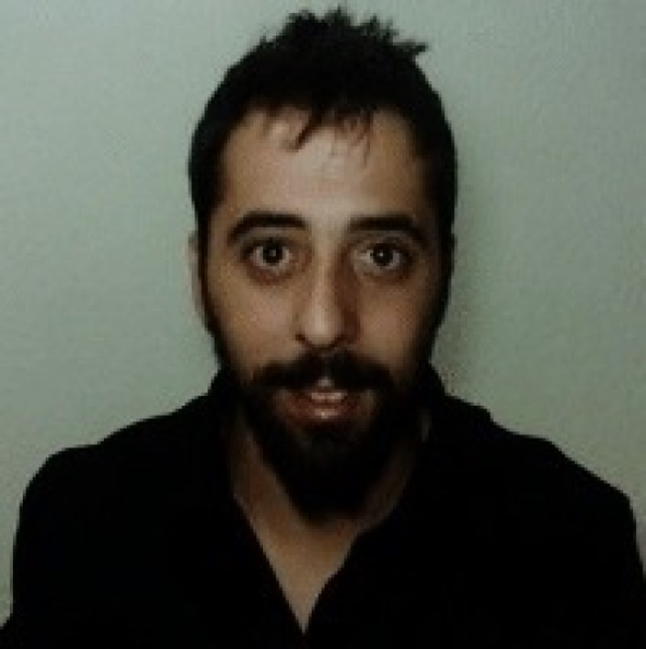

Panagiotis Kourtesis received his BSc in psychology from State University of New York and continued his career as clinical psychologist and researcher at the Amyotrophic Lateral Sclerosis Patients Association.
He continued his postgraduate studies and research at the University of Strasbourg, and at the University of Edinburgh, where he obtained an MSc in human cognitive neuropsychology from the latter.
At that time, he joined the neuropsychology team of Astley Ainslie Hospital, where he worked on cognitive stimulation and relaxation interventions.
Currently, he is a doctoral candidate and researcher in experimental Psychology & cognitive neuroscience at the University of Edinburgh in collaboration with University Suor Orsola Benincasa of Naples.
Also he is VR specialist and workshops coordinator at uCreate Studio of University of Edinburgh (uCreate Studio).
He affiliates with the human cognitive neuroscience research team of the Department of Psychology (PPLS), and the interdisciplinary research centre "Scienza Nuova" (Scienza Nuova).
He is certified Virtual Reality software developer with a knack for interdisciplinary (Arts, Engineering, Robotics, A.I., Internet of Things) research, cultural, and educational projects.
His current research interests include VR Neuroscience & Neuropsychology, VR Rehabilitation & Therapy, Cyber-psychology,Human Computer Interaction, Brain Computer Interaction, Telemedicine, & Research Methods (VR) & Statistics (R & JASP).
Contact:pkourtes@exseed.ed.ac.uk
ResearchGate Profile
Academic Profile
Follow @PanosCortese
Follow @PanosKourtesis
Tweets by Panos Kourtesis